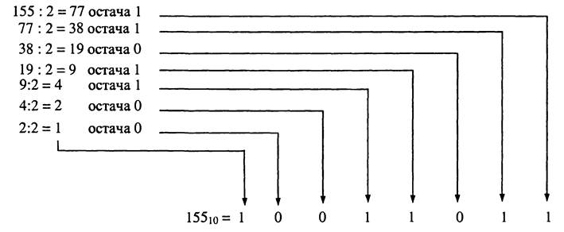

Конвертер чисел
Інструкція:
Для перетворення числа або коду з однієї системи числення до іншої, Вам достатньо ввести його у відповідному полі. Скрипт автоматично переведе його у двійкове, вісімкове, десяткове або шістнадцяткове число. Якщо потрібного поля немає, Ви можете власноруч його додати: для цього у останньому полі введіть основу системи числення, або назву перетворення, наприклад «Доповняльний код». Підтримуються від’ємні та додатні основи, перетворення у доповняльний код, римські числа та уявний кварта-код. Зверніть увагу, якщо поле вводу загориться червоним, це означає, що ви намагаєтесь використовувати числа або символи, які не входять до діапазону наданої системи числення.
Введення у системи числення
Системою числення, або нумерацією, називається сукупність правил і знаків, за допомогою яких можна відобразити (кодувати) будь-яке невід’ємне число. Найбільш поширеною системою числення є десяткова. Назва системи числення, найчастіше, прямо говорить про її основу, яка в свою чергу, вказує на крайнє можливе значення системи (якщо брати початок з числа 0). Бінарний код, або двійкова система числення, складається лише з двох чисел – 0 та 1. Це означає, що інформація у цій системі числення кодується 0-ми та 1-ми, у безлічі їх комбінацій. Код, представлений у десятковій системі числення, може містити усі числа, від 0 до 9. В свою чергу, існують системи числення, основа яких більша за десяткову. Це означає, що для представлення коду у них ми повинні використовувати не тільки числа від 0 до 9, а також і букви латинського алфавіту – A-Z, де А означає число 10, B – 11, і т.д. При бажанні, можна записати будь-яке число у будь-якій системі числення, але не дивлячись на це, найбільш використовуваними залишаються двійкова та десяткова.
Двійкова система числення
Двійкова система числення – це позиційна система числення, база якої дорівнює двом та використовує для запису чисел тільки два символи: зазвичай 0 (нуль) та 1 (одиницю). Числа, представлені в цій системі часто називають двійковими або бінарними. Завдяки тому, що таку систему доволі просто використовувати в електричних схемах, двійкова система отримала широке розповсюдження у світі обчислювальних пристроїв. Рахувати у двійковій системі не складніше, ніж у будь-якій іншій. Скажімо, у десятковій системі, коли число у поточному розряді сягає десяти, то розряд обнуляється і одиниця додається до старшого. Наприклад: 9+1=10, 44+7=51; Аналогічним чином у двійковій системі: коли число в розряді сягає двох — розряд обнуляється і одиниця додається до старшого розряду. Тобто: 1+1=10. Зверніть увагу, «10» у цьому записі — двійкове число, у десятковій системі це число записується як «2». А десяткове 9+1=10 у двійковій системі буде виглядати так: 1001+1=1010 (після додавання одиниці число в останньому розряді дорівнює двом, тож розряд обнуляється і одиниця додається до передостаннього (старшого) розряду).
Як відбувається перетворення
Для перетворення десяткового числа у двійкову систему числення число ділять на 2. Остачу у вигляді 0 або 1 записують у молодший розряд двійкового числа. Частку від ділення знов ділять на 2, остачу (0 або 1) записують у наступний після молодшого розряд. Ці дії виконують доти, доки частка від чергового ділення не дорівнюватиме 1. Одиницю записують у старший розряд двійкового числа. Для перетворення цілого числа X, записаного в системі числення з основою p, на його еквівалент у системі числення з основою q слід ділити X на q до отримання цілої остачі, меншої від q (метод послідовного ділення). Число X у системі числення з основою q подається послідовністю остач ділення в порядку, зворотному їхньому одержанню, причому старшу цифру в числі X дає остання остача.
